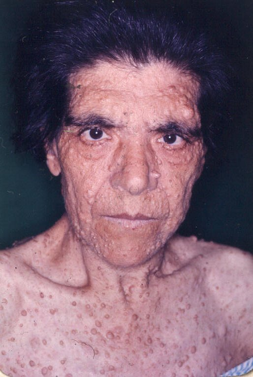
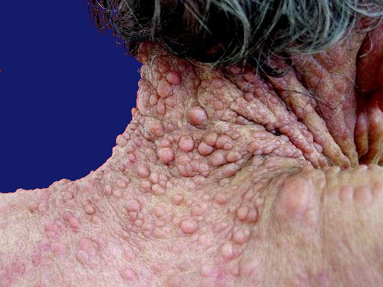

E.e José Vieira de Moraes, 3J

E.e José Vieira de Moraes, 3J
A neurofibromatose, também conhecida como doença de von Recklinghausen, é um conjunto de doenças genéticas que afetam, mais
notadamente, a pele e o sistema neurológico, mas que podem cursar com inúmeras outras apresentações. A condição se origina de
mutações genéticas que resultam em sintomas imprevisíveis, mas que nem sempre são graves.
Os sintomas resultantes da neurofibromatose são extremamente variáveis e dependem,
principalmente, do tipo de alteração genética envolvida. Um dos principais sinais da doença
consiste no aparecimento de nódulos e tumores na pele, de tamanho variável. Esses
diagnóstico da doença. Tumores no sistema nervoso central, alterações ósseas e auditivas podem estar presentes. As manifestação
tendem a iniciar na infância.
Não existe ainda tratamento específico comprovado para as alterações genéticas descritas. No entanto, o paciente deve ter
acompanhamento médico regular. O médico especialista poderá realizar a retirada dos neurofibromas que apresentem crescimento rápido ou tratar lesões inestéticas.
A possibilidade do diagnóstico é levantada a partir da observação clínica dos sinais e sintomas.
É muito importante levar em conta a história familiar, pelo padrão autossômico dominante. Na análise da história familiar devem ser
consideradas as possibilidades de penetrância incompleta e de expressividade variável. Ainda, em casos esporádicos podem levar à
ocorrência de mutações novas
O diagnóstico é confirmado pela análise genético-molecular através de sequenciamento de gene único, painéis genéticos, exoma ou genoma e pela identificação de variantes patogênicas nos genes NF1, NF2 ou SMARCB1.
 